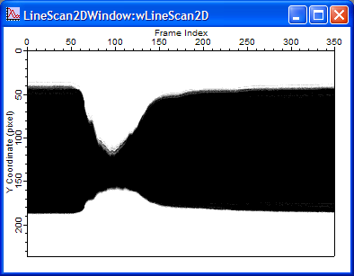

These two methods generated similar results.

Explore the possible improvement in analysis with line scan method.
With a video quality like this, line scan method does not gain significant improvement.
CS-Alone.avi (generously provided by Dr. Javier Medina in the University of Pennsylvania.)
Condition: Threshold = 60
| Line Scan vs. Frame Index (without thresholding) | Line Scan vs. Frame Index (threshold = 60) |
|  |
Comparison between method #1 (thresholding and pixel counting:
red) and method #2 (thresholding, line integration, and
line counting: blue)
These two methods generated similar results.
With a very good video quality, line scan method does not gain significant improvement.
One thing should be pointed out about the selection of ROI in the thresholding and pixel counting method (#1). Selecting the whole eye might not be the best way to determine ROI since the reflection of light source could introduce some error. Selecting a rectangle avoiding the reflecting spot as the ROI is better.